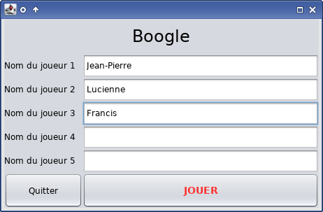
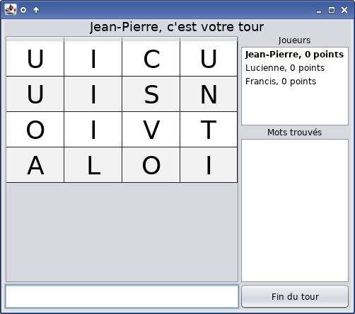
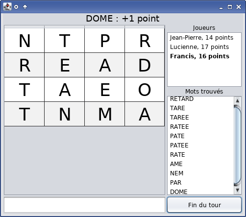
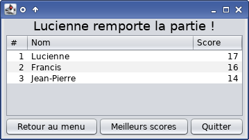
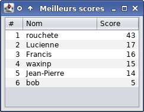

Manuel utilisateur de Boogle
Table des matières
- Règles du jeu
- Utilisation en ligne de commande
- Utilisation en interface graphique
- Résolution des problèmes
- Notes de développement
Règles du jeu
- Le jeu de Boggle se joue de un à cinq joueurs.
- Chaque joueur joue à tour de rôle.
- Un joueur a un score et sa propre grille de 16 lettres organisées en 4 lignes et 4 colonnes.
- Des dés spécifiques sont utilisés pour construire la grille de lettres à chaque nouveau tour.
- Le joueur indique les mots qu'il peut trouver dans la grille avant de terminer son tour.
- Les conditions de validité d'un mot sont les suivantes :
- Sa longueur doit être au moins de trois lettres ;
- Le mot doit exister dans le dictionnaire du jeu ;
- Le mot ne doit pas avoir déjà été trouvé par le joueur ;
- Chaque lettre du mot doit être voisine à la suivante, dans l'ordre, dans la grille ;
- Une même lettre n'est pas utilisée plus d'une fois dans la grille.
- Une lettre est considérée comme voisine à une autre quand elle se trouve sur l'une des huit cases de la grille qui environnent l'autre lettre (côtés et diagonales).
- Le score associé à chaque mot dépend de la longueur du mot :
- Un point jusqu'à quatre lettres ;
- Deux points pour cinq lettres ;
- Trois points pour six lettres ;
- Cinq points pour sept lettres ;
- Onze points pour huit lettres et plus.
- Le score d'un joueur est déterminé par la somme des scores des mots qu'il a trouvé.
- Lorsque tous les joueurs ont terminé leur tour, la partie s'achève et le palmarès est établi.
Utilisation en ligne de commande
____ _
| _ \ | |
| |_) | ___ ___ __ _| | ___
| _ < / _ \ / _ \ / _` | |/ _ \
| |_) | (_) | (_) | (_| | | __/
|____/ \___/ \___/ \__, |_|\___|
__/ |
|___/
----------------------------------
Utilisation en interface graphique
Au démarrage du jeu en mode interface graphique, le menu principal s'affiche.
Saisissez dans les champs les noms de vos joueurs. Pour n'avoir par exemple que trois joueurs, laissez deux des champs vides et ils ne seront pas pris en compte. Lorsque vous êtes prêt, cliquez sur « Jouer ».
Si l'erreur « Au moins un joueur doit être saisi » s'affiche, son message est assez explicite. Un champ de nom de joueur ne sera pris en compte que s'il contient des caractères autres que des espaces ou des tabulations.
Une fois le jeu démarré, la fenêtre de jeu s'affiche.
En haut de la fenêtre est affiché un message de statut, indiquant un changement de joueur lors d'un nouveau tour, la validation d'un mot avec le score obtenu, ou l'invalidation d'un mot et la raison de celle-ci :
- [Nom], c'est votre tour : Le tour du joueur précédent est terminé, il faut maintenant se lever de la chaise et laisser un autre jouer à sa place.
- MOT : +2 points : Un mot a été saisi et validé ; le joueur gagne le nombre indiqué de points.
- Ce mot n'existe pas : Le mot n'est pas référencé dans le dictionnaire du jeu.
- Ce mot n'est pas dans la grille : Il n'existe aucun alignement de lettres dans la grille capable de former le mot saisi.
- Ce mot est trop court : Le mot saisi fait moins de trois lettres.
- Vous avez déjà trouvé ce mot : Le mot saisi fait déjà partie de la liste des mots trouvés par le joueur.
Pour jouer, un joueur doit saisir dans le champ de texte en bas de l'écran un mot. Pour l'aider, la grille est affichée dans la partie de gauche de la fenêtre, et une liste des mots qu'il a déjà trouvé ainsi qu'une liste des joueurs de la partie avec leurs scores est affichée. Le nom du joueur actuellement en train de jouer est affiché en gras.
Il n'est pas obligatoire d'écrire les mots entièrement en majuscules ; les minuscules sont acceptées et la ponctuation et les espaces sont ignorés. Les accents sont également supprimés.
Pour terminer son tour, on clique sur le bouton « Fin de tour ». Lorsque le dernier joueur a terminé son tour, la fenêtre des résultats est affichée.
Le bouton « Retour au menu » permet un retour au menu principal pour refaire une partie, le bouton « Quitter » permet de quitter le jeu, et le bouton » Meilleurs scores » affiche une fenêtre listant les meilleurs scores du jeu.
Résolution des problèmes
Erreur au chargement
Si une boîte de dialogue du type « Erreur au chargement » s'affiche au démarrage de l'interface graphique de Boogle, des fichiers de configuration du jeu sont manquants.
Le dossier où est démarré Boogle doit contenir un fichier de règles rules-4x4.properties et un fichier texte highscores.txt. Le fichier de règles indique également les noms de deux autres fichiers essentiels : le fichier de dés, par défaut des-4x4.csv, et le fichier de dictionnaire, par défaut dict-fr.txt.
Rien ne s'affiche
En interface graphique, si rien ne s'affiche et que le jeu ne se lance pas, un message d'erreur a dû être envoyé sur la sortie d'erreur. Il s'agit d'une erreur imprévue du développement. Contactez l'équipe de développement en leur indiquant ce message d'erreur.
Temps de chargement anormalement long
Le logiciel effectue le chargement du dictionnaire au démarrage. Dans le cas de l'interface en ligne de commande, le logo "Boogle" est affiché seul pendant le chargement. Dans le cas de l'interface graphique, rien n'est affiché avant le chargement complet.
Un disque dur lent, un fichier de dictionnaire trop gros, une mémoire vive ou un processeur trop lents peuvent expliquer ce phénomène.
Notes de développement
- Les classes intialement fournies ont été modifiées pour que tout soit en anglais ;
- Le dictionnaire initialement fourni a été remplacé par un autre dictionnaire plus fiable ;
- L'ensemble du projet a été réalisé sur NetBeans, pour faciliter le développement de l'interface graphique, avant d'être restructuré selon les demandes du projet avec l'aide d'un fichier de build Ant ;
- Le projet NetBeans utilisé est disponible sur GitHub ;
- Le meilleur score obtenu en jouant durant les tests et le déboguage, sans assistance extérieure, ni bug, ni triche, est de 43 points.